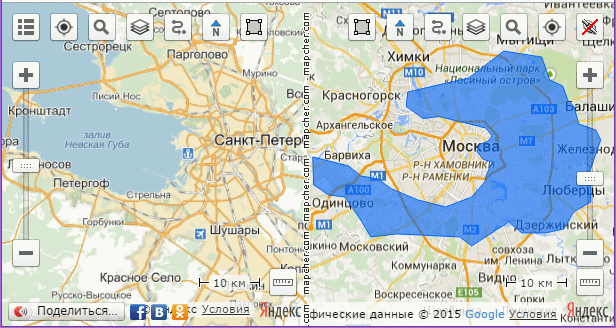
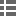
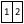
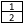

English
Русский
Read this document to get familiar with Mapcher.
What is Mapcher?
Mapcher is a tool for visual comparison of remote objects and distances.
Technically Mapcher is:
- Two Google maps or Yandex maps, arranged side by side in a single window
- The same scales are automatically maintained in both maps
- These Google and Yandex maps can be rotated

Why do you need Mapcher?
How can you answer the question of an interlocutor (usually a women): How far away from here is it?
You have to pick in mind the landmarks familiar to you both and answer uncertainly: "It's about like from here to..." And of course, after this answer you are questioned whether you have matched the distances right. Could you go and compare the two maps, apply one distance to another.
You can try to check yourself doing so: you open Google maps in two browser windows, place them side by side, in one window you focus on the distance asked, your familiar terrain is in the other window. You set equal zoom levels.
You see, the same zoom level does not mean the same scale. Indeed, the scale of the map depends on the latitude.
And if you're lucky and the latitudes as well as the scale levels match you face another problem: One distance lays from south to north and the other one from west to east.
How difficult it was earlier to answer such a simple question: How far is it
! But now we have Mapcher.
Mapcher is an indispensable source of the answers to all the questions like How far is it?
or What is bigger?
in the world.
It can help you compare cities, regions, countries, lakes, seas and other objects on the map. Compare the distances to schools, shops, pharmacies, hospitals when choosing a new place of residence compared with the corresponding distances at your old site.
How to use Mapcher?
- Please visit mapcher. Wait for the two maps to load.
- On map one focus on a familiar location. To do this, you can use the search
 button or allow the site to determine your position .
button or allow the site to determine your position .
- On the second map find the area you want to compare with your familiar area.
The program automatically maintains the same scale on both maps. If you are confused with the behavior of the site, turn it off with the Independent zoom button. Do not forget to re-press the button when you find both areas.
- If you need to rotate the map, drag it with the right mouse button or drag the special marker .
- Share the comparison of the maps through your social network, or send a link to the comparison by copying it from the address bar.
What do the buttons on the maps do?
 Menu button opens the menu with the following options:

 Switch localization
Switch localization
If you choose English or Russian the appropriate language version loads. The units and the set of available layers change too: Yandex public map is available only in the Russian version.
  Maps layout orientation
If you want to compare long, narrow objects, it is best to choose the vertical layout. Horizontal arrangement of maps is OK for compact objects.
Reset
The site development still continues and sometimes bugs appear. Reset button deletes the cookies and sets the maps to the initial state.
Help
The description of the service, you are reading now.
In addition to the menu button there are buttons for working with the maps:
Geopositioning
Focuses map on your current location.
Search
Shows an input field to search for geographic objects around the world.
Layers
Select a map type in the drop-down list: Yandex, Yandex public map, Google, OSM, satellite images.
Route planning
Compass
When you rotate the map the compass always points north. Pressing this button turns the map to its original position.
Polygon
When the button is pressed the polygon drawing mode is switched on. To disable the drawing re-press the button. Draw the outline and move it to the other map with a single click on it. So it is possible to impose a shadow of one object to another one.
Independent zoom
Temporarily disables the automatic synchronization of zoom levels on the maps.
Zoom Tool
You can change the zoom level with greater accuracy than it is possible with the mouse.
Ruler
Social networking
Allows to publish the comparison you made in your social network .